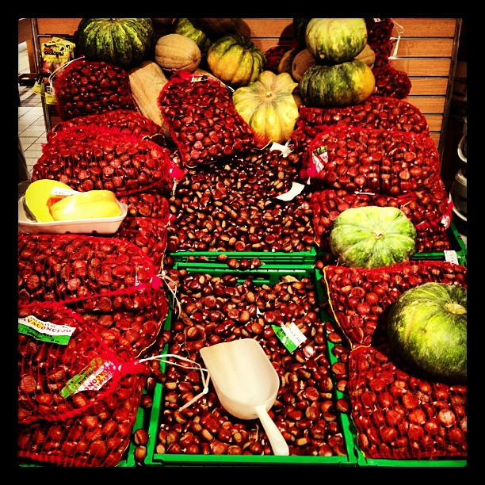

There's no doubt, one of my Fall favorite is definitely chestnuts, which find the perfect climate in Italy where they grow naturally. Documented since the Roman times, for centuries they have been a dominant portion of the peasants' standard diet. Did you know that they come in two versions? The smaller one is called castagne, while the bigger one is called marroni.